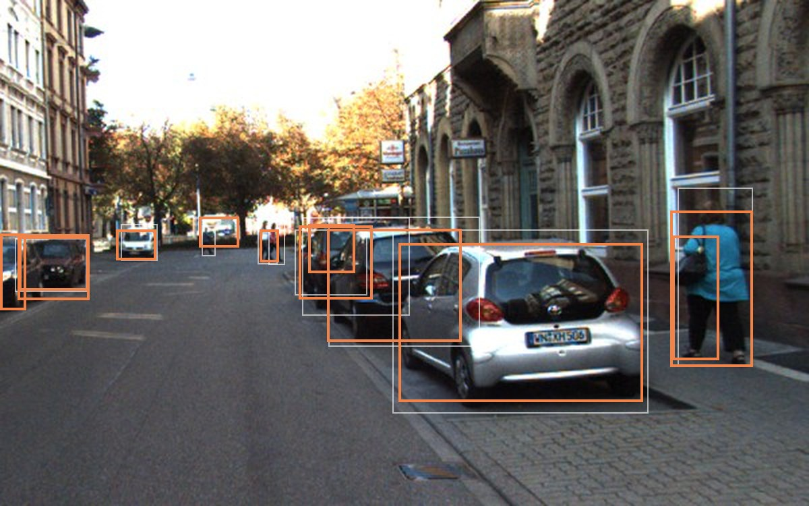
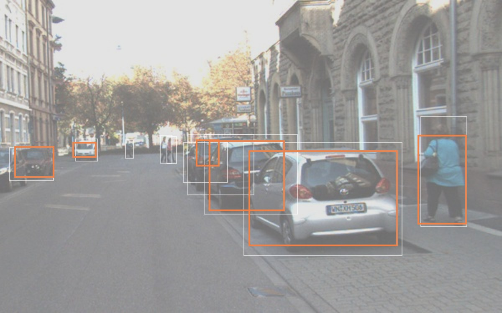

Interactive version
khriis-k.github.ioLive demos, video, and the fog slider

clear · 12 detections ≥ 0.25

fog severity 0.60 · 6 detections ≥ 0.25
Same frame, same detector, more fog. Orange boxes are detections; thin white outlines are the labeled objects. Fog and detector from the Edge Perception Reliability Lab. On the website this is a slider. Frame: KITTI (Geiger et al., CVPR 2012), cropped, CC BY-NC-SA 3.0.
Selected work
Edge Perception Reliability Lab
Personal project, Sep 2026 to now
Does a detector trained on clear roads still work in fog, snow, and at night? This lab runs YOLOX-Nano over 2,000 driving frames in 8 weather and lighting conditions, and compares real bad weather against simulated degradation.
On a 300-frame benchmark with 2,946 labeled objects, mAP dropped 85% under severe simulated fog. The scoring engine that classifies hits, misses, false alarms, and class mix-ups has 800+ automated tests.
The workbench during a synthetic fog run on 300 frames of city driving in Kraków.
MyCouncil
Personal project, Nov 2025 to now
You bring a hard decision and 16 AI counselors with different thinking styles argue it out. You can debate them, refine the dilemma, or talk to one counselor alone.
The hard part was memory. Counselors recall what you said in earlier sessions through a retrieval pipeline with BGE embeddings and a reranker. It improved relevant-context recall by 168% on 160 held-out tests, measured within a 240-case suite that also tracks ranking quality and latency.
A council forming around "move for the job, or stay with friends?"
What caused 20 years of runway incursions
Capstone with the USC Aviation Safety & Security Program, Mar to Jun 2025. Our team of eight students was selected by our professor; I built the topic models.
NASA's Aviation Safety Reporting System holds pilot and controller narratives of runway incursions going back to 2001. We analyzed 11K+ of these reports. Researchers have mostly coded them by hand. We used NLP to find the recurring causes automatically and to see how they changed over time.
I built the LDA and BERTopic pipelines, including expanding aviation abbreviations in the preprocessing step and tuning UMAP and HDBSCAN so the topics separated cleanly. Then I compared topics before and after 2017, which showed a 105% increase in risk on time-pressure incidents. We presented the findings to 50+ program representatives.
One topic, two periods. "Line" and "clearance" appear only after 2018, while "hold" and "takeoff" drop out.
Rebuilding sales attribution at TrueCar
Machine Learning Engineer, May 2026 to now. Proprietary, so no code here.
TrueCar's legacy sales attribution algorithm used a probabilistic ranking built on a naive Bayes model.
I rebuilt the ranking and trained an XGBoost model on 52 million labeled pairs with 10 target-encoded features.
XGBoost, Spark, AWS
Change versus the legacy system, at over 95% confidence
Billable sales in production
+124%
Monthly match volume
+196%
Match accuracy
+19%
Top-1 accuracy vs. naive Bayes
+59%
AUC-ROC
+30%
Mean reciprocal rank
+29%
TrojanSafe HousingA web app that maps historical crime data from USC Department of Public Safety daily incident logs, so students and their families can compare off-campus housing. Private repo, code available on request.
Counsel ReflectA tool for reviewing counseling conversations turn by turn, with 81 emotion, safety, and factuality metrics. I helped design the interface and React dashboard, which scored 78.8 and 75.2 on usability against a 68 benchmark. counselreflect.com
Experience
May 2026 to nowMachine Learning Engineer, TrueCar
May 2025 to Aug 2026Full-Stack Software Engineer, Counsel Reflect
Fine-tuned RoBERTa classifiers to 80 to 92% accuracy across three empathy dimensions.
Mar to Jun 2025Data Analyst, USC Aviation Safety & Security Program
Jan 2025 to nowTeaching Assistant, USC machine learning courses
Four courses, from intro AI to NLP and generative AI. I've mentored 100+ students across 90+ projects.
Fall 2026Social Chair, EscapeSC
USC's escape room club. We design and build rooms on campus.
Feb 2024 to Aug 2026Co-Chair, Viterbi Undergraduate Student Association
Represented 50+ engineering clubs to the dean and started the school's first AI ethics panel.
About
person 0.99
I'm most interested in ranking, retrieval, and applied ML that has to hold up in the real world, whether it's serving millions of users or running somewhere mistakes are costly.
I also TA machine learning courses, so if I'm not building something, I'm probably explaining why someone else's model isn't training. Otherwise I'm with EscapeSC, USC's escape room club, where we build rooms on campus. My friends and I are 17 rooms in.